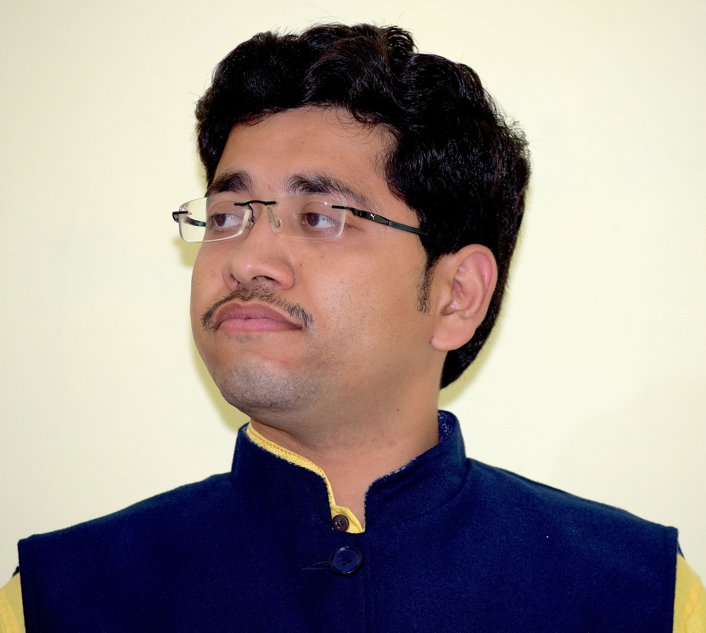

I am working as a Scientist-B at National institute of Hydrology, Roorkee. Earlier I also worked as Assistant professor of Soil & Water Engineering for a brief period of 4 months at Sugarcane Research Insitiute of Dr. Rajendra Prasad Central Agricultural University . I am pusuing my PhD under the supervision of Prof. Chandranath Chatterjee and Prof. Narendra Singh Raghuwanshi in Hydrology, Climate and Crop Modelling (HydroC2M) Research Group at Agricultural & Food Engineering Department, Indian Institute of Technology Kharagpur
I have received Master of Technology from the Indian Institute of Technology Kharagpur in 2014. My current research interests are in 'Hydrological Modeling', 'Hydro-climatology', and 'Application of Remote Sensing and GIS in Water Resource Management'.
Previously, I completed my Bachelor of Technology in Agricultural Engineering from Acharya N. G. Ranga Agricultural University, Hyderabad. I received Senior Research Fellowship from Information Technology Research Academy (ITRA), a National Programme initiated by Ministry of Electronics and Information Technology (MeitY) during 2014-2017. Prior to that I was also awarded with MHRD fellowship during post-graduation and National Talent Scholarship during under graduation from Indian Council of Agricultural Research, New Delhi.

Deepak Singh Bisht
Scientist - B
Resume